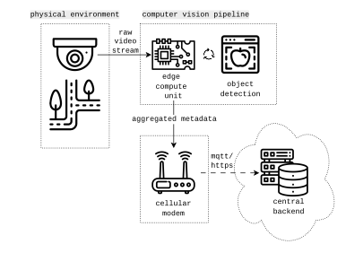

A Digital Twin Paradigm for Imperfect Urban Sensor Networks
Carrow Morris-Wiltshire
Newcastle University · Urban Observatory
Abundant data, limited intelligence
Pedestrian counts are generated at the edge via computer vision models on camera streams. Edge computation is vulnerable to environmental noise, transmission delays, and power failures, producing the missingness patterns.

Time × Sensor ID · Systemic non-random outage patterns
Treating missing data as a learnable signal
Our framework abandons sequential imputation — it generates intrinsic resilience through Masked Auto-Encoding.
Resilient IoT: Joint spatial-temporal learning
DynamicGraphLearner uses static environmental covariates
Constraint: Raw spatial coordinates are explicitly discarded to prevent trivial spatial leakage.
GAT attention reshapes graph structure based on environmental covariates
Bridging spatial gaps with physical edge features
[E, edge_dim] tensor
Next.js Digital Twin · Deck.gl over MapLibre
Building operational trust through probabilistic forecasting
ZINB predictions · Dispersion bounds · Dropout probability
Reproducible, publication-grade experimentation
Artifact Twinning: Every UI payload embeds its W&B Run ID and Git Commit Hash — linking visual behavior back to the exact mathematical state of the model.
Achieving AI-Readiness at the edge
Questions & Discussion
Newcastle University · Urban Observatory